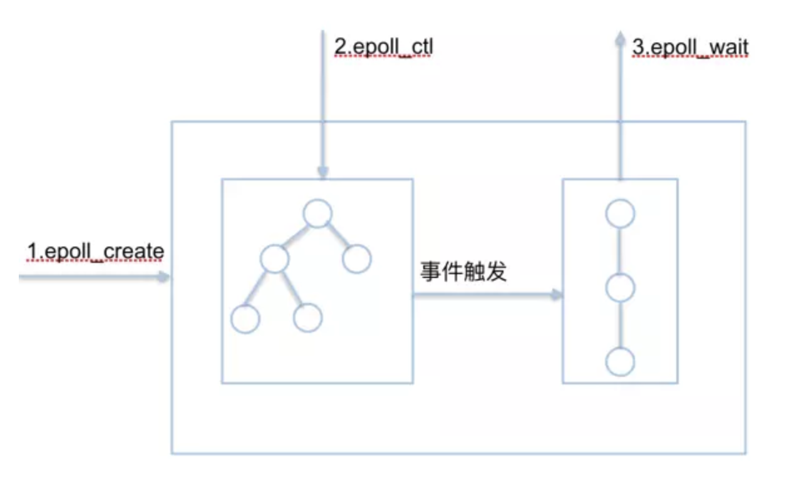

操作系统是管理计算机硬件与软件资源的计算机程序，同时也是计算机系统的内核与基石。操作系统需要处理如管理与配置内存、决定系统资源供需的优先次序、控制输入设备与输出设备、操作网络与管理文件系统等基本事务。操作系统也提供一个让用户与系统交互的操作界面。
一、基础
I/O多路复用就是通过一种机制(select/poll/epoll都是IO多路复用的机制)，可以监视多个描述符，一旦某个描述符就绪(一般是读就绪或者写就绪)，能够通知应用程序进行相应的读写操作。
- select/poll/epoll本质上都是同步I/O，因为他们都需要在读写事件就绪后自己负责进行读写，也就是说这个读写过程是阻塞的；而异步I/O则无需自己负责进行读写，异步I/O的实现会负责把数据从内核拷贝到用户空间。
一些概念
- 用户空间/内核空间：现在操作系统都是采用虚拟存储器，那么对32位操作系统而言，它的寻址空间(虚拟存储空间)为2的32次方。
- 操作系统的核心是内核，独立于普通的应用程序，可以访问受保护的内存空间，也有访问底层硬件设备的所有权限。
- 为了保证用户进程不能直接操作内核(kernel)，保证内核的安全，操作系统将虚拟空间划分为两部分，一部分为内核空间，一部分为用户空间。
- 进程切换：为了控制进程的执行，内核必须有能力挂起正在CPU上运行的进程，并恢复以前挂起的某个进程的执行，这种行为被称为进程切换。因此可以说，任何进程都是在操作系统内核的支持下运行的，是与内核紧密相关的，并且进程切换是非常耗费资源的。
- 进程阻塞：正在执行的进程，由于期待的某些事件未发生，如请求系统资源失败、等待某种操作的完成、新数据尚未到达或无新工作做等，则由系统自动执行阻塞原语(Block)，使自己由运行状态变为阻塞状态。
- 进程的阻塞是自身的一种主动行为，也因此只有处于运行态的进程(获得了CPU资源)才可能将其转为阻塞状态。
- 当进程进入阻塞状态，是不占用CPU资源的。
- 文件描述符：文件描述符(File descriptor)是计算机科学中的一个术语，是一个用于表述指向文件的引用的抽象化概念。
- 文件描述符在形式上是一个非负整数，实际上它是一个索引值，指向内核为每一个进程所维护的该进程打开文件的记录表。
- 当程序打开一个现有文件或者创建一个新文件时，内核向进程返回一个文件描述符。
- 在程序设计中，一些涉及底层的程序编写往往会围绕着文件描述符展开。
- 但是文件描述符这一概念往往只适用于UNIX、Linux这样的操作系统。
- 缓存I/O：又称为标准I/O，大多数文件系统的默认I/O操作都是缓存I/O。
- 在Linux的缓存I/O机制中，操作系统会将I/O的数据缓存在文件系统的页缓存中，即数据会先被拷贝到操作系统内核的缓冲区中，然后才会从操作系统内核的缓冲区拷贝到应用程序的地址空间。
- 用户空间/内核空间：现在操作系统都是采用虚拟存储器，那么对32位操作系统而言，它的寻址空间(虚拟存储空间)为2的32次方。
二、实现方式
select方式
原理：进程调用select函数会被阻塞，然后内核会轮询检查select负责的fd，直到有文件描述符就绪(或超时timeout)，select函数就会返回。若未超时，当select函数返回后，可以通过调用FD_ISSET遍历fdset，来找到就绪的描述符后进程被唤醒，处理结束后又继续轮询检查。它采用一个1024长度的数组来存储状态，也就是说它最多可以同时检查1024个文件描述符。
- select机制中有一种fd_set的数据结构，实际上是一个long类型的数组，每一个数组元素都能与一打开的文件句柄(Socket、文件、命名管道、设备等句柄)建立联系，建立联系的工作由程序员完成。当调用select()时，由内核根据IO状态修改fd_set的内容，由此来通知执行了select()的进程哪一Socket或文件可读。
- select本质上是通过设置或者轮询检查存放fd标志位的数据结构(fdset)来进行下一步处理
1
2
3
4FD_ZERO(fd_set *fdset); // 将set清零使集合中不含任何fd
FD_SET(int fd, fd_set *fdset); // 将fd加入set集合
FD_CLR(int fd, fd_set *fdset); // 将fd从set集合中清除
FD_ISSET(int fd, fd_set *fdset); // 检测fd是否在set集合中，不在则返回0select函数
int select(int maxfdp1, fd_set *readset, fd_set *writeset, fd_set *exceptset, const struct timeval *timeout);- 参数：
- nfds：需要检查的文件描述字个数
- readset：用来检查可读性的一组文件描述字。
- writeset：用来检查可写性的一组文件描述字。
- exceptset：用来检查是否有异常条件出现的文件描述字。(注：错误不包括在异常条件之内)
- timeout：超时，填NULL为阻塞，填0为非阻塞，其他为一段超时时间
- 返回值int：若有就绪描述符返回其数目，若超时则为0，若出错则为-1
- 参数：
优势：select最大优势是用户可以在一个线程内同时处理多个socket的IO请求。用户可以注册多个socket，然后不断地调用select读取被激活的socket，即可达到在同一个线程内同时处理多个IO请求的目的。而在同步阻塞模型中，必须通过多线程的方式才能达到这个目的。
问题
- 单个进程可监视的fd数量是有限的。
- 一般来说这个数目和系统内存关系很大，具体数目可以cat /proc/sys/fs/file-max察看。
- 32位机默认是1024个，64位机默认是2048。
- 采用轮询的方法，效率较低。
- 每一次调用select都需要将用户传入的数组拷贝到内核空间，然后查询每个fd对应的设备状态。
- 当监听的fd数量较多但活跃数(就绪)较少时，select仍然需要遍历检查FD_SETSIZE个fd，他的时间复杂度为O(n)。
- 需要维护一个用来存放大量fd的数据结构，这样会使得用户空间和内核空间在传递该结构时复制开销大
- 单个进程可监视的fd数量是有限的。
poll方式
poll实现原理基本和select相同，主要的区别是底层实现方式，poll采用了链表结构从而提高了select方式1024个文件描述符的限制，另外在轮训
poll函数
1
2
3
4
5
6int poll(struct pollfd *fds, nfds_t nfds, int timeout);
typedef struct pollfd {
int fd; // 需要被检测或选择的文件描述符
short events; // 对文件描述符fd上感兴趣的事件
short revents; // 文件描述符fd上当前实际发生的事件
} pollfd_t;- 参数
- struct pollfd *fds：fds是一个struct pollfd类型的数组，用于存放需要检测其状态的socket描述符，并且调用poll函数之后fds数组不会被清空；一个pollfd结构体表示一个被监视的文件描述符，通过传递fds指示poll()监视多个文件描述符。其中，结构体的events域是监视该文件描述符的事件掩码，由用户来设置这个域，结构体的revents域是文件描述符的操作结果事件掩码，内核在调用返回时设置这个域
- nfds_t nfds：记录数组fds中描述符的总数量
- 返回值int：函数返回fds集合中就绪的读、写或出错的描述符数量，返回0表示超时，返回-1表示出错
- 参数
优缺点
- poll改变了文件描述符集合的描述方式，使用了pollfd结构而不是select的fd_set结构，使得poll支持的文件描述符集合限制远大于select的1024。
- poll有一个“水平触发”的特点，如果报告了fd后，没有被处理，那么下次poll时会再次报告该fd。
- poll基于链表存储，poll和select在本质上没有什么区别，它解决了select对监听数量有限制这一缺点。
- poll的问题：采用轮询的方式进行fd检查，每次调用都会将链表传入内核空间，不论其是否有意义。
epoll方式
相关函数
1
2
3int epoll_create(int size);
int epoll_ctl(int epfd, int op, int fd, struct epoll_event *event);
int epoll_wait(int epfd, struct epoll_event * events, int maxevents, int timeout);epoll_create函数创建一个epoll句柄，参数size表明内核要监听的描述符数量。调用成功时返回一个epoll句柄描述符，失败时返回-1。
epoll_ctl 函数注册要监听的事件类型。四个参数解释如下：
- epfd 表示epoll句柄
- op 表示fd操作类型，有如下3种
- EPOLL_CTL_ADD 注册新的fd到epfd中
- EPOLL_CTL_MOD 修改已注册的fd的监听事件
- EPOLL_CTL_DEL 从epfd中删除一个fd
- fd 是要监听的描述符
- event 表示要监听的事件，epoll_event 结构体定义如下：
1
2
3
4
5
6
7
8
9
10
11struct epoll_event {
__uint32_t events; /* Epoll events */
epoll_data_t data; /* User data variable */
};
typedef union epoll_data {
void *ptr;
int fd;
__uint32_t u32;
__uint64_t u64;
} epoll_data_t;epoll_wait函数等待事件的就绪，成功时返回就绪的事件数目，调用失败时返回 -1，等待超时返回 0。
- epfd 是epoll句柄
- events 表示从内核得到的就绪事件集合
- maxevents 告诉内核events的大小
- timeout 表示等待的超时事件
epoll的实现重点有几个关键词
mmap，红黑树，回调函数，rdlist- epoll是通过内核与用户空间mmap同一块内存实现的。
- mmap将用户空间的一块地址和内核空间的一块地址同时映射到相同的一块物理内存地址(不管是用户空间还是内核空间都是虚拟地址，最终要通过地址映射映射到物理地址)，使得这块物理内存对内核和对用户均可见，减少用户态和内核态之间的数据交换,调用epoll_create会返回一个文件描述符。
- 在调用epoll_ctl时，会将监听事件放到一个数据结构–红黑树(红黑树本身插入和删除时间复杂度为LogN)中，并且与网络配置器绑定一个回调函数。
- 这棵红黑树是存放在mmap出的内存中的。
- 当监听的事件发生时，将调用之前绑定的回调函数，这个回调函数的作用是将该事件存放到rdlist中去，这是一个双向循环链表。
- 调用epoll_wait函数，去查找rdlist中的就绪事件，存放在传入的参数events中，并返回就绪事件的数量。
- epoll是通过内核与用户空间mmap同一块内存实现的。
select/poll/epoll对比
- 用户态将文件描述符传入内核的方式：
- select：创建3个文件描述符集并拷贝到内核中，分别监听读、写、异常动作。这里受到单个进程可以打开的fd数量限制,默认是1024。
- poll：将传入的struct pollfd结构体数组拷贝到内核中进行监听。
- epoll：执行epoll_create会在内核的高速cache区中建立一颗红黑树以及就绪链表(该链表存储已经就绪的文件描述符)。接着用户执行的epoll_ctl函数添加文件描述符会在红黑树上增加相应的结点。
- 内核态检测文件描述符是否可读可写的方式：
- select：采用轮询方式遍历所有fd，最后返回一个描述符读写操作是否就绪的mask掩码，根据这个掩码给fd_set赋值。
- poll：同样采用轮询方式查询每个fd的状态，如果就绪则在等待队列中加入一项并继续遍历。
- epoll：采用回调机制。在执行epoll_ctl的add操作时，不仅将文件描述符放到红黑树上，而且也注册了回调函数，内核在检测到某文件描述符可读/可写时会调用回调函数，该回调函数将文件描述符放在就绪链表中。
- 如何找到就绪的文件描述符并传递给用户态：
- select：将之前传入的fd_set拷贝传出到用户态并返回就绪的文件描述符总数。用户态并不知道是哪些文件描述符处于就绪态，需要遍历来判断。
- poll：将之前传入的fd数组拷贝传出用户态并返回就绪的文件描述符总数。用户态并不知道是哪些文件描述符处于就绪态，需要遍历来判断。
- epoll：epoll_wait只用观察就绪链表中有无数据即可，最后将链表的数据返回给数组并返回就绪的数量。内核将就绪的文件描述符放在传入的数组中，所以只用遍历依次处理即可。这里返回的文件描述符是通过mmap让内核和用户空间共享同一块内存实现传递的，减少了不必要的拷贝。
- 继续重新监听时如何重复以上步骤：
- select：将新的监听文件描述符集合拷贝传入内核中，继续以上步骤。
- poll：将新的struct pollfd结构体数组拷贝传入内核中，继续以上步骤。
- epoll：无需重新构建红黑树，直接沿用已存在的即可。
- 对比总结
- select和poll的动作基本一致，只是poll采用链表来进行文件描述符的存储，而select采用fd标注位来存放，所以select会受到最大连接数的限制,而poll不会。
- select、poll、epoll虽然都会返回就绪的文件描述符数量，但是select和poll并不会明确指出是哪些文件描述符就绪，而epoll会。造成的区别就是系统调用返回后，调用select和poll的程序需要遍历监听的整个文件描述符找到是谁处于就绪，而epoll则直接处理就行了。
- select、poll都需要将有关文件描述符的数据结构拷贝进内核，最后再拷贝出来。而epoll创建的有关文件描述符的数据结构本身就存于内核态中，系统调用返回时也采用mmap共享存储区，需要拷贝的次数大大减少。
- select、poll采用轮询的方式来检查文件描述符是否处于就绪态，而epoll采用回调机制。造成的结果就是随着fd的增加，select和poll的效率会线性降低，而epoll不会受到太大影响，除非活跃的socket很多。
- 用户态将文件描述符传入内核的方式：
三、epoll的不同实现方式
epoll
- epoll是Linux内核为处理大批量文件描述符而作了改进的poll，是Linux下多路复用IO接口select/poll的增强版本，它能显著提高程序在大量并发连接中只有少量活跃的情况下的系统CPU利用率。
- epoll的核心是3个API，核心数据结构是：1个红黑树和1个链表。

三个步骤
- 首先，需要调用epoll_create来创建一个epoll的文件描述符，内核会同时创建一个eventpoll的数据结构。这个数据结构里面会包含两个东西，一个是红黑树，专门用于存储epoll_ctl注册进来的fd文件描述符；另外一个是就绪链表，用来存储epoll_wait调用相关的，已经就绪的那些fd文件描述符。
- 其次，因为epoll中的所有事件，都与网卡驱动程序建立回调关系，当相应的事件发生的时候，会通过这个回调函数，将发生的事件添加到就绪链表当中。
- 最后，当调用epoll_wait检查是否有事件发生时，只需要检查eventpoll对象中的rdlist双链表中是否有需要处理的事件。如果rdlist不为空，则把发生的事件复制到用户态，同时将事件数量返回给用户。
epoll是通过后台中断的方式来获得就绪的状态，调用epoll_create创建实例，调用epoll_ctl添加或删除监控的文件描述符，调用epoll_wait阻塞住，直到有就绪的文件描述符，通过epoll_event参数返回就绪状态的文件描述符和事件。
- epoll_create 创建一个epoll对象，一般epollfd = epoll_create()
- epoll_ctl(epoll_add/epoll_del的合体)，往epoll对象中增加/删除某一个流的某一个事件
- epoll_ctl(epollfd, EPOLL_CTL_ADD, socket, EPOLLIN);//有缓冲区内有数据时epoll_wait返回
- epoll_ctl(epollfd, EPOLL_CTL_DEL, socket, EPOLLOUT);//缓冲区可写入时epoll_wait返回
- epoll_wait(epollfd,…)等待直到注册的事件发生
两种触发方式
- 边缘触发(edge trigger，ET)
- 对于读操作
- 当缓冲区由不可读变为可读的时候，即缓冲区由空变为不空的时候
- 当有新数据到达时，即缓冲区中的待读数据变多的时候
- 当缓冲区有数据可读，且应用进程对相应的描述符进行EPOLL_CTL_MOD修改EPOLLIN事件时
- 对于写操作
- 当缓冲区由不可写变为可写时
- 当有旧数据被发送走，即缓冲区中的内容变少的时候
- 当缓冲区有空间可写，且应用进程对相应的描述符进行EPOLL_CTL_MOD修改EPOLLOUT事件时。
- 对于读操作
- 水平触发(level trigger，LT)，默认
- 对于读操作，只要缓冲内容不为空，LT模式返回读就绪。
- 对于写操作，只要缓冲区还不满，LT模式会返回写就绪。
- 边缘触发(edge trigger，ET)
kqueue
kqueue是FreeBSD上的一种的多路复用机制，它是针对传统的select/poll处理大量的文件描述符性能较低效而开发出来的。kqueue与epoll非常相似，最初是2000年Jonathan Lemon在FreeBSD系统上开发的一个高性能的事件通知接口。
原理：注册一批socket描述符到kqueue以后，当其中的描述符状态发生变化时，kqueue将一次性通知应用程序哪些描述符可读、可写或出错了。
kqueue支持多种类型的文件描述符，包括socket、信号、定时器、AIO、VNODE、PIPE。
kqueue的接口包括kqueue()、kevent()两个系统调用和一个struct kevent结构：
kqueue()生成一个内核事件队列，返回该队列的文件描述符，其它 API 通过该描述符操作这个kqueue，如：注册，反注册，获取通知等。
kevent()提供向内核注册/反注册事件和返回就绪事件或错误事件。
- 注册/撤销：kevent()中的neventlist参数将其设为0且传入合法的changelist和nchangelist，就会将changelist中的事件注册到kqueue中。当关闭某文件描述符时，与之关联的事件会被自动地从kqueue移除。
- 启用禁用/禁止过滤器事件：通过flags EV_ENABLE和EV_DISABLE使过滤器事件有效或无效。这个功能在利用 EVFILT_WRITE 发送数据时非常有用。
- 获取已触发事件：将nchangelist设置成0及其他参数，当kevent非错误和超时返回时，在eventlist和neventlist中就保存可用事件集合。
struct kevent就是kevent()操作的最基本的事件结构：
1
2
3
4
5
6
7
8struct kevent {
uintptr_t ident; /* 事件 ID */
short filter; /* 事件过滤器 */
u_short flags; /* 行为标识 */
u_int fflags; /* 过滤器标识值 */
intptr_t data; /* 过滤器数据 */
void *udata; /* 应用透传数据 */
};- ident：事件的id，一般设置为文件描述符。
- filter：可以将kqueue filter看作事件。内核检测ident上注册的filter的状态，状态发生了变化，就通知应用程序。
在一个kqueue中，
{ident, filter}确定一个唯一的事件 - 行为标志flags：
- EV_ADD：指示加入事件到 kqueue
- EV_DELETE：指示将传入的事件从 kqueue 中移除
- 过滤器标识值：
- EV_ENABLE：过滤器事件可用，注册一个事件时，默认是可用的。
- EV_DISABLE：过滤器事件不可用，当内部描述可读或可写时，将不通知应用程序。
iocp
- 输入输出完成端口(Input/Output Completion Port，IOCP)，是支持多个同时发生的异步I/O操作的应用程序编程接口，在Windows NT的3.5版本以后，或AIX 5版以后或Solaris第十版以后，开始支持。
- 原理：通常情况下，线程池中的工作线程的数量与CPU内核数量相同，以此来最小化线程切换代价。一个IOCP对象，在操作系统中可关联着多个Socket和(或)文件控制端。IOCP对象内部有一个先进先出(FIFO)队列，用于存放IOCP所关联的输入输出端的服务请求完成消息。请求输入输出服务的进程不接收IO服务完成通知，而是检查IOCP的消息队列以确定IO请求的状态。 (线程池中的)多个线程负责从IOCP消息队列中取走完成通知并执行数据处理；如果队列中没有消息，那么线程阻塞挂起在该队列。这些线程从而实现了负载均衡。